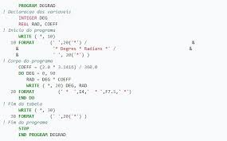
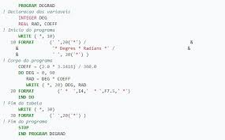

Fortran
Fortran, acrônimo de IBM Mathematical FORmula TRANslation System, é uma
linguagem de programação voltada para computação científica e técnica e que
especialmente projetada pela execução eficiente em tempo de execução numa ampla
variedade de processadores.